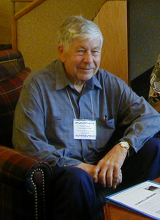

Please note: the AAS Obituaries are temporarily being hosted on this website while their full content is being ingested into the PubPub publishing platform newly adopted by the Bulletin of the American Astronomical Society. When the migration is complete, your existing links will take you to the final, migrated content. Contact peter.williams@aas.org with any questions.
Thomas Cragg (1927-2011)
Reprinted with permission from AAVSO.
It is with great sadness that I announce the passing away of longtime AAVSO member and observer Thomas A. Cragg. According to his beloved wife, Mary, Tom passed peacefully on 6 May 2011 at 1 pm (New South Wales, Australia, time). Tom had been ill for about a year following a series of strokes. His funeral will be in Coonabarabran on Tuesday, May 10, and he will be buried in the Native Grove Cemetery there.
Those of us fortunate to know Tom personally will remember his twinkling eyes, ready smile, and hearty laugh, his willingness to help with projects large and small, his excitement over and persistence in trying to observe anything asked of him (no matter how difficult the target or how sleep-deprived it might make him), his dedication and loyalty and professionalism. His old friends called him Tommy, and this boyish nickname suited him.
Tom joined the AAVSO in 1945 at the age of 17, already excited about astronomy and eager to participate in the AAVSO observing programs. He was an avid and prolific variable star observer, amassing a lifetime total of 157,056 observations, of which all but 5 were visual (the 5 were CCD). He was also a dedicated solar observer. Tom observed all kinds of variable stars, and took advantage of his location after moving to Australia to monitor many unstudied or neglected southern variables. When Tom lived in California, he often observed at Ford Observatory with Clinton Ford, Charles Scovil, Monsignor Ron Royer, and other AAVSO'ers involved in chart and sequence work and in expanding the AAVSO observing program. His longevity with the AAVSO meant that Tom "served" under the leadership, successively, of Leon Campbell, Margaret Mayall, Janet Mattei, and Arne Henden - what a ride!
Tom served three terms on the AAVSO Council: 1951-1953, 1962-1964, and 1964-1966. He had a strong interest for many years in Cepheid variables, and served as chair of the AAVSO Cepheid Committee from the years when Cepheids were of great interest to the professional community until the committee's dissolution in the late 1980s, its goals achieved.
Tom was the recipient of numerous AAVSO awards, including the 25th Merit Award, the Director's Award, a Solar Honor Award, Observer Awards for visual observations through the 150,000 observations level, and a Supernova Award (for assisting Robert O. Evans in his discovery of SN 1995V in NGC 1087).
Among Tom's other honors is the Astronomical League's Leslie C. Peltier Award for his work in variable stars and lunar and planetary astronomy. Minor planet (5068) Cragg is named in Tom's honor.
In his professional career, Tom's astronomical work included being an observer at Mount Wilson Observatory near Los Angeles, California, for many years, then serving for many more years as an observer at Siding Spring Observatory near Coonabarabran, New South Wales, Australia.
Tom was a talented musician who played the flute beautifully; attendees at the AAVSO's 75th Anniversary meeting in 1986 will remember his skilled and charming performance on several different flutes he had brought with him from Australia.
Tom Cragg gave unselfishly of himself and his talents to variable star astronomy and the AAVSO for over 60 years. Thank you, Tom.
He is a good soul who is patient and cheerful on the telephone when awoken by a young Headquarters assistant after just having gone soundly to sleep following an all-night observing session and has a Siamese cat jumping on him and yowling in his other ear for attention - I speak from personal experience that Tom was indeed such when I miscalculated the time difference between Cambridge and Coonabarabran and ruined his sleep. I shall miss that good soul.
Elizabeth O. Waagen, Senior Technical Assistant, AAVSO
Obituary written by: Elizabeth O. Waagen (AAVSO)
Additional links:
BAAS Citation: BAAS, 2018, 50, 004